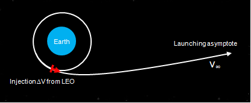

Problema
O objetivo é minimizar o custo total de uma transferência da
Terra para Marte, medido em ΔV total (km/s). Comparamos
duas estratégias:
Transferência direta
- Espaçonave deixa uma órbita de estacionamento ao redor da Terra (h = 200 km).
- Uma única órbita heliocêntrica de transferência até Marte.
- Captura em órbita ao redor de Marte (h = 200 km).
- Parâmetros: fase de Marte na partida e tempo de voo.

Swing-by por Vênus
- Transferência Terra → Vênus (Lambert).
- Sobrevôo (gravity assist) em Vênus — sem custo de propelente, apenas deflexão.
- Transferência Vênus → Marte (Lambert).
- Captura em Marte.
- Parâmetros: fase de Vênus, fase de Marte, tTV, tVM, periapsis do swing-by.

Hipóteses
- Órbitas planetárias circulares e coplanares (problema 2D).
- Patched conics: dentro da SOI de cada corpo, considera-se apenas sua gravidade.
- Manobras impulsivas (instantâneas) — não há propulsão contínua.
- Para o swing-by: aproxima-se a passagem como uma deflexão simples no plano, sem mudança de magnitude de v∞.
Método
1. Problema de Lambert
Dado um par de posições r₁ e r₂ e um tempo de voo tf, encontrar a órbita kepleriana que conecta os pontos. Implementação usada: algoritmo de Izzo (Newton–Raphson rápido sobre a variável log(1+cos(α/2))), com fallback para Lancaster–Blanchard com melhorias de Gooding — portado a partir do código de Rody Oldenhuis.
2. Modelagem das manobras
Na saída da Terra:
Na chegada a Marte:
No swing-by de Vênus, a deflexão é:
3. Função-custo
A função-custo é simplesmente a soma dos ΔV impulsivos da missão. O vetor de decisão x tem:
- Sem swing-by: [fase de Marte, tTM]
- Com swing-by: [fase de Marte, fase de Vênus, tTV, tVM, rp/RSOI]
4. Otimização — Particle Swarm Optimization
Como o espaço é multimodal (e descontínuo nas bordas onde Lambert falha), usamos PSO. Cada partícula atualiza sua velocidade segundo:
com w=0.9, φp=0.6, φg=0.8 (mesmos hiperparâmetros do MATLAB).
Simulador interativo
Edite os parâmetros à direita e veja a trajetória atualizar em tempo real. O ΔV total é calculado usando exatamente as mesmas equações do código MATLAB original.
Parâmetros da trajetória
Otimização ao vivo (PSO)
Lance o enxame de partículas e veja a convergência. A otimização roda em chunks assíncronos para não travar a UI — você pode interromper a qualquer momento. O modo selecionado acima é respeitado.
Exploração: porkchop plot
Mapa de custo para a transferência direta Terra → Marte em função da fase de Marte no momento da partida e do tempo de voo. Permite visualizar onde estão as “janelas” favoráveis (regiões de baixo ΔV).
Resultados de referência
Resultados obtidos rodando o PSO desta versão JavaScript (verificados contra os resultados originais do MATLAB / data_best_2020-11-13.mat):
| Cenário | ΔV total [km/s] | Parâmetros ótimos |
|---|---|---|
| Transferência direta otimizada | ~5,71 | fase Marte ≈ 180° (oposição), t = 259 dias — Hohmann clássica |
| Swing-by por Vênus otimizado | ~8,02 | fase Vênus ≈ 180°, tTV ≈ 121 d, tVM ≈ 215 d, rp/RSOI ≈ 0,09 |
Observação: nesta missão específica, com órbitas circulares e captura em LMO/LMO, o swing-by por Vênus não vence a transferência direta — ele adiciona uma manobra a mais e a deflexão por Vênus não economiza ΔV suficiente. O exercício é especialmente útil para missões rumo aos planetas externos.
Figuras de referência



Referências e código
- Relatório final (PDF): MVO_41_trabalho_final.pdf
- Apêndice / nota extra (PDF): MVO_41_EXTRA.pdf
- Código MATLAB original: GitHub — chicomcastro/optimized-Earth-Mars-transfer
- Lambert solver: Rody Oldenhuis (BSD), implementando Izzo (ESA) e Lancaster–Blanchard–Gooding.
- Bibliografia clássica:
- Curtis, H. Orbital Mechanics for Engineering Students.
- Vallado, D. A. Fundamentals of Astrodynamics and Applications.
- Battin, R. An Introduction to the Mathematics and Methods of Astrodynamics.